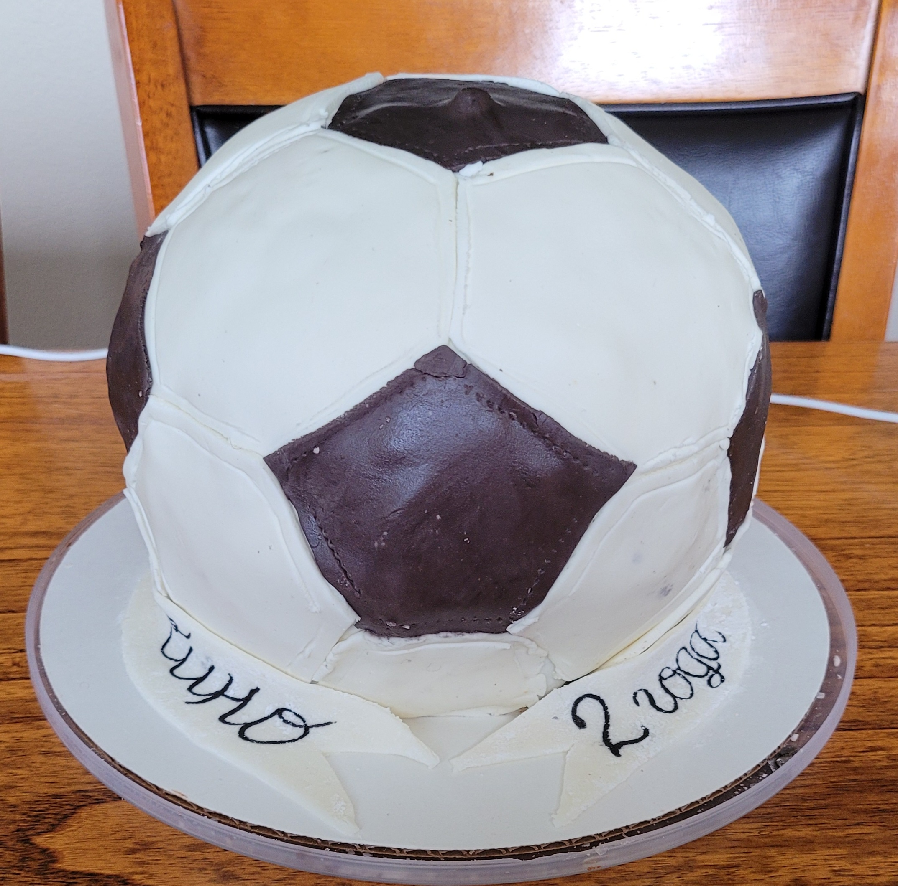
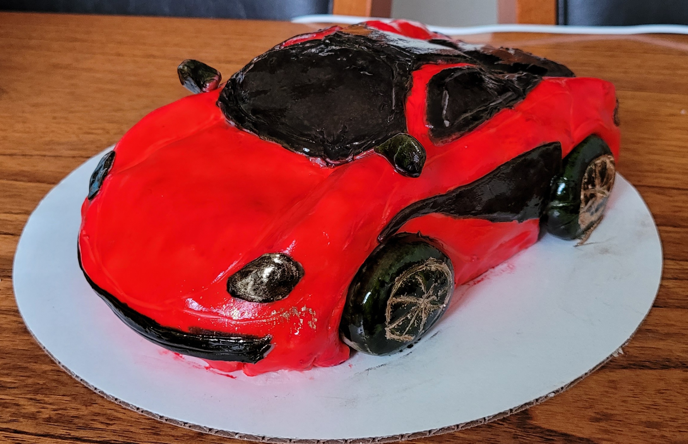

Mastic


Ingredients:
- marshmallow -200 gr
- butter-30-50 gr
- lemon acid - 1/3 tsp
- water - 2 tsp
- sugar powder 250 gr
- starch - 100 gr
Direction:
- In marshmallows of the same color, add a tablespoon of lemon juice and heat in the microwave (10-20 seconds) or in a water bath until double in volume. Advice. If you want to tint the mastic with food coloring, then it is better to add it after you have taken out the swollen and melted marshmallows from the microwave. At this point, you need to add the dye and mix the mass well with a spoon. Then, in portions, introduce the sifted powdered sugar and stir the mass with a spoon or spatula.
- When it becomes difficult to stir with a spoon, put the mass on a table sprinkled with powdered sugar and continue to knead with your hands until the mastic stops sticking to your hands. Wrap the resulting mastic in cling film or a thin plastic bag (so that the film fits snugly on all sides of the mastic and air does not get inside the bag) and put in the refrigerator for 30 minutes.
- Advice. Mastic can be stored in the refrigerator, wrapped tightly in cellophane, for up to 6 weeks; you can also store the mastic in the freezer, wrapping it in several layers of cellophane and wrapping it in foil - the mastic can be stored in the freezer for several months
- Ready dried figures from mastic should be stored in a tightly closed box in a dry place - such figures are stored for several months. Remove the finished mastic from the refrigerator, put it on a table sprinkled with starch and roll it thinly.
- From the finished mastic, you can prepare various figures, flowers, leaves and roses for cakes or cover the cake with thinly rolled mastic.